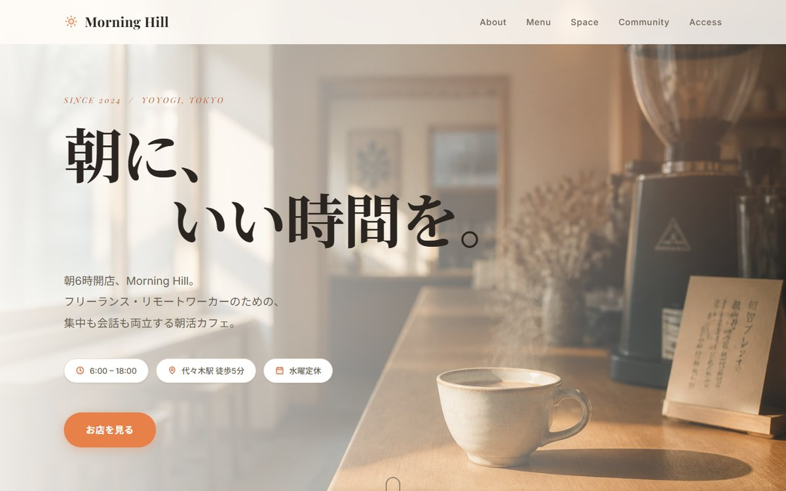

01
TOP
/
Web制作 / 業務自動化
AIを使って、小さな仕事を速く・丁寧に仕上げます。
02
ABOUT
About
AIを使って、できることを
少しずつ広げています。
ランディングページの制作から、日々の面倒な作業を片付ける小さなツールづくりまで。
「速く・丁寧に・ちょうどいい大きさで」を心がけて、ひとつずつ形にしています。
実務経験はありませんが、これから力をつけていきたいと思っています。
サンプルを作って公開しているので、よかったらぜひご覧ください。
Web制作や業務自動化に限らず、AIを使ってできることを増やしながら、活かせる仕事に携わっていけたらと思います。
03
SKILLS
Skills
Web制作
静的なランディングページの設計・制作・公開（Vercel等）。
レスポンシブやSEO/OGPにも対応。
業務自動化
CSV整形・集計・レポート生成など、繰り返し作業をツール化して時短する。
AI活用
AIを制作プロセスに組み込み、画像生成・実装・調整を素早く回す。
04
WORKS
Works
-

-

EC受注データ
統合ツール 複数ECの受注CSV（列名バラバラ）をドラッグ&ドロップで統合・集計・グラフ化し、Excelで出力。
「月末2時間 → 数秒」を実現。
ブラウザで試せるデモと Windows 版を用意しています。